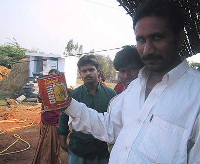
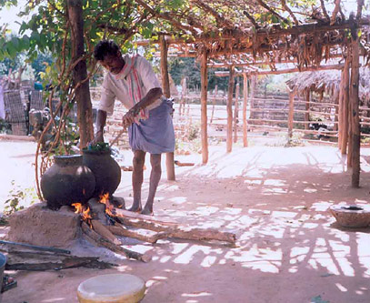
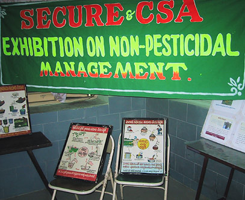
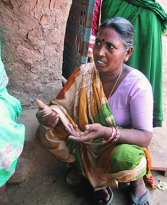
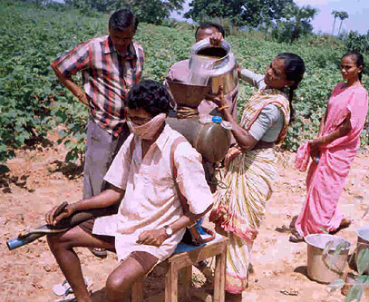
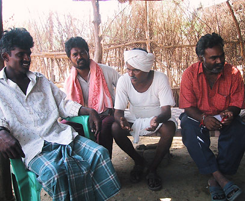
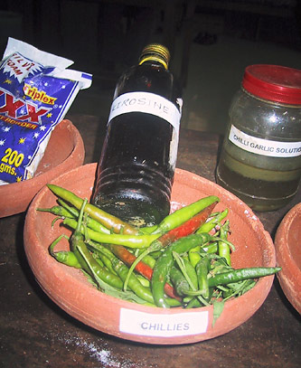
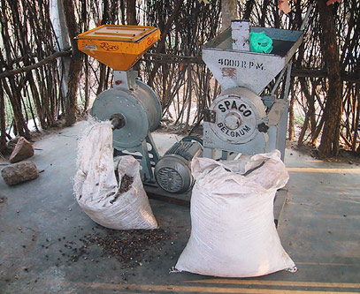
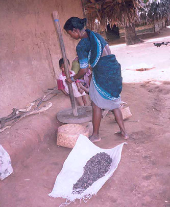

Getting Clean: Recovering from Pesticide Addiction
- Author: Gerald Marten and Donna Glee Williams
- An abridged version of this article was published in The Ecologist, Vol. 36, No. 10 (December 2006), p. 50-53
- Download (PDF)
You can sum up the economics of addiction in a few short words: Sell a product that makes buyers need it more.
Mega-fortunes have been made on this principle. But the alcohol, tobacco, caffeine, and narcotics industries are limited by the puny calculus of addicting individuals one at a time. The agricultural chemical industry has a higher vision: chemical dependence that can ensnare whole bioregions.
About two decades ago, cotton came to the Khamman district of Andhra Pradesh, India. Seduced by the agro-chemical industry, farmers turned from traditional varied food-crops to cotton farming with pesticides. Pesticide-resistant insects developed and thrived. To fight them, farmers poured on even more insecticides, going into debt, worsening the resistance problem, and creating severe health troubles for their community.

Pesticide can re-used to take drinking water from a teashop well in a village that still uses pesticides.

Preparing a solution for use against sucking insects.
Ingredients: leaves of neem (Azadirachta indica), vavili (Vitex negundo), and sitaphalam (Annona squamosa).
The introduction of cotton had pushed them past an eco-tipping point, an abrupt shift between sustainability and unsustainability. This “tip” landed them in the trap of agricultural addiction to chemical pesticides. This scenario has been replayed in so many thousands of villages that it would not be news if it weren’t for one thing: Eco-tipping points are not one-way streets. A farming community called Punukula kicked the chemical habit and sent the pesticide-pushers on their way. “Just saying no” to pesticides tipped their environment back toward an agriculture that cultivated not just cotton, but also the health of individuals, the community, and the ecosystem. Today, Punukula’s model of pesticide-free agriculture is spreading to villages throughout the region.
How did a little village stop the flood of chemicals that threatened to drown it in debt, illness, and ecological devastation? Metaphorically, they dropped a rock into the current right where it could change the course of the stream. Like other eco-tipping point stories with happy endings, Punukula’s involves setting in motion catalytic changes that cascade through the entire system, turning it back in the direction that nourishes life.
Getting Hooked: Tipping Toward Ruin
About twenty years ago, a handful of families migrated from the Guntur district into Punukula, a farming community of about 900 people where a household typically cultivates 2-10 acres. The outsiders from Guntur brought cotton-culture with them. Cotton wooed farmers by promising to bring in more hard cash than the mixed crops they were already growing to eat and sell: millet, sorghum, groundnuts, pigeon peas, mung beans, chili, and rice. But raising cotton meant pesticides and fertilizers. These chemical inputs were a mystery to the Punukulans, and there were no agricultural extension services for these poor, small-scale, mostly illiterate dirt farmers to lean on.

Posters showing how to prepare and apply chili-garlic and polyhedral virus solutions at a SECURE exhibit on Non-Pesticide Management.

A woman in Punukula village explains the dramatic improvement in villagers' health since Non-Pesticide Management began.
Local agro-chemical dealers obligingly filled the need for information and supplies. These “middlemen” sold commercial seeds, fertilizers, and insecticides on credit and guaranteed purchase of the crop. They offered technical advice (flavored by a soupçon of self-interest) provided by the companies that supplied their products: Bayer, Syngenta, Dupont, Monsanto, and Denosyl. The farmers depended on the dealers. If they wanted to raise cotton—and they did—they had no choice.
Booming yields and incomes were the quick “high” that hooked growers during the early years of cotton in the region. Expenses for insecticides were fairly low because cotton pests hadn’t moved in yet. Many farmers were so impressed with the chemicals that they started using them on their other crops as well. The immediate payoffs from chemically-dependent cotton agriculture both ensured and obscured the fact that the black dirt fields had “tipped” into a freefall of environmental degradation, dragged down by a chain of cause-and-effect.
Attracted by the rich monoculture banquet the farmers laid out for them, cotton-eaters like cotton bollworms (Helicoverpa armigera), pink bollworms (Pectinophora gossypeilla), cotton leafworms (Spodoptera litura), leafhoppers, and aphids plagued the fields. Repeated spraying killed off the most susceptible pests and left the strongest to reproduce and pass their resistance on to generations of ever-hardier offspring. As the bugs grew tougher and more abundant, farmers applied a greater variety and quantity of poisons, sometimes mixing “cocktails” of as many as ten insecticides. At the same time, cotton was gobbling up the nutrients in the soil, leaving the growers no option but to invest in chemical fertilizers.
Pesticide addiction pulled everyone and everything along in a net of interlocking feedback loops and chain-reactions that trussed up both the ecosystem and the social system. As outlays for fertilizers and insecticides escalated, the cost of producing cotton mounted. Eventually the expense of chemical inputs outgrew the cash value of the crop. Because farmers bought seeds and chemicals on credit, as their incomes shriveled more of their livelihood was eaten up by interest on what they owed. They fell further and further into debt, compelling them to work even harder. When poverty pinches from every side, family survival may even compel indenturing child labor. Education goes by the board, ensuring more generations of poverty.
The addiction to agricultural chemicals affected health as well as pocketbook. All members of farm families shared the work of spraying the fields with insecticides. They did this without training, which limited the chemicals’ effectiveness—meaning they used more than they needed. Lacking information about safe storage, disposal, and use, everyone was exposed to toxic effects, including women and children. Insecticide poisoning became common. People developed chronic health problems such as headaches, nausea, skin rashes, fatigue, mental symptoms, and visual problems, as well as acute poisoning that required hospitalization and sometimes caused permanent neurological damage or death. Humans were not the only victims. Cows and goats died when they grazed too near treated fields.

Pouring chili-garlic solution into a tank for spraying on cotton.
Nothing but cotton offered the potential to bring in the cash people needed to pay off their dealers, money lenders, and medical bills. By the time some farmers tried to break free of their chemical dependence, insecticides had already decimated the birds, wasps, beetles, spiders, and other predators that had once provided natural control of crop pests. Without their balancing presence, pests ran riot if insecticide use was cut back. The farmers were hooked.
In a negative environmental tip, the head-spinning whirl of vicious cycles seems overwhelming. Some farmers escaped to different places, different work. Others resorted to illegal activities, such as teak smuggling, to cope with their debts. When so many links of cause and effect are pulling you toward the abyss, disaster can look inevitable. Despair comes easily. Suicide became increasingly common among the farmers, the favored method being ingestion of insecticide.
Getting Clean: Tipping Toward Restoration
The neem tree (Azadirachta indica) is the backbone of Punukula’s recovery from addiction. Neem is a fast-growing broad-leaved evergreen tree related to mahogany. It protects itself against insects by producing a multitude of natural pesticides that work in a variety of ways. They repel insect egg-laying, inhibit hatching of the eggs, and interfere with growth. Most important, the azadiractin in neem obstructs feeding and pest insects starve. Because of neem’s wide array of chemical defenses, its insect enemies cannot develop pesticide resistance through simple single mutations. And because its arsenal of toxins evolved specifically to defeat plant-eating insects, they are generally harmless to humans and other animals, including birds and insects that eat pest insects. Neem thrives in hot regions like the Khamman district.
To turn a vicious cycle around, it takes an outsider’s fresh perspective coupled with an insider’s intimate understanding of the problem. For Punukula, that paradoxical blend came in the person of K. Venu Madhav. Venu Madhav grew up in Kokkeireni, a village about 100 kilometers from Punukula. He was raised on a farm that relied on insecticides; he had seen them drag his own father into debt. He was an eye-witness to the suffering caused by pesticide poisoning in his own village. The fact that his farmer-father also dealt in natural remedies may have predisposed him to have an open mind about natural botanical approaches.

Margam Mutthaiah (second from right), the first farmer in Punukula to use Non-Pesticide Management, tells his story.

Ingredients for chili-garlic solution, displayed at a SECURE exhibit on Non-Pesticide Management.
After working for a few years as a farmer, Venu Madhav took a job with a local NGO called SECURE (Socio-Economic and Cultural Upliftment in Rural Environment). SECURE helps rural communities to develop participatory natural resource management, empower women, promote education, and strengthen local governance. The organization originally went to Punukula to develop a watershed project but could not ignore the heavy crop losses, frequent hospitalization due to pesticide poisoning, and other miseries caused by the pesticide trap. Debt had led three of the villagers to suicide.
Venu Madhav was searching for a way out of the pesticide trap when M.V. Shastry at the Centre for World Solidarity told him about their experience with natural methods for controlling agricultural pests. The Centre for World Solidarity and, later, the Centre for Sustainable Agriculture joined forces with SECURE, providing the technical support to start promoting natural alternatives to chemical pesticides.
Around 1998, Venu Madhav started talking to the farmers in Punukula about changing the way they raised their cotton. The villagers were skeptical, but SECURE was persistent. SECURE arranged for some of the villagers to travel 400 km to Warangel to visit Kattula Mallamma, a woman who was using natural methods successfully. They saw first hand that it was possible.
Finally, after a year, SECURE found the influential pioneer they needed. Margam Mutthaiah was a prominent village elder with a large agricultural debt. One day his son collapsed with acute insecticide poisoning that rendered him unconscious for a week. The young man survived, but the hospital bill was 18,000 rupees, a staggering sum for a farm family.
Mutthaiah was ready to try something different. He had been among the first villagers to raise cotton. Now he would be the first to try it without chemicals. Venu Madhav and the SECURE staff coached Muthaiah, their early adopter, in what they called Non-Pesticide Management (NPM), a sort of Twelve Step Program for abstinence from agricultural chemicals.
The first step was turning to neem. In this, Punukula was calling on ecological and social memory, frequent allies in eco-tipping point success stories. The plant is native to India and Myanmar where it has been used for centuries to control pests and promote health. It could still be found in the Khamman district. The ecosystem still “remembered” it. And even though it seemed farfetched that an humble local plant (“neem that we use to brush our teeth,” as villager Hemla Nayak put it) could out-perform sophisticated exotic chemicals, using it would simply be adapting a traditional remedy for the troubles of today.

Machine used to grind neem seeds to make neem solution. Women grind neem not only for use in Punukula but also have a business providing it to other villages.
To protect cotton, neem seeds are simply ground to a powder, soaked overnight in water, and sprayed onto the crop at least every ten days. The neem treatment disrupts the feeding, development, and reproduction of destructive insects without harming the birds and beneficial insects that provide natural pest control. Neem cake, applied to the soil, kills pests and diseases in the soil and doubles as an organic fertilizer high in nitrogen. Neem grows locally and is easy to process, so it is also much less expensive than the chemical insecticides sold for profit by the dealers and their corporate suppliers.
The use of neem is complemented by other methods:
- Spraying chili-garlic solution on the cotton, particularly when an infestation is severe. Chili-garlic causes the pest insects to fall off the crop, but does not harm insects that prey on the pests.
- Applying a mixture of cow dung and urine to combat leafhoppers, aphids, thrips, and other sucking insects. At the same time that cow dung and urine provide natural fertilizer, the mixture puts a rough coating on the plants, discouraging insects from laying their eggs and obstructing their feeding.
- Applying a naturally occurring nuclear polyhedral virus that infects cotton bollworms. The virus is fatal to them, but harmless to other creatures. Farmers can manage this “biological warfare” themselves. Infected larvae hang upside down from the leaf edges of the crop, so they can be easily gathered and ground into a solution which is sprayed on the crop, with lethal results for the pests.
- Planting “trap crops” such as sorghum, marigold, castor, and maize in and around the fields to attract pest insects away from the cotton.
- Removing and burning cotton and trap-crop branches that are heavily infested.
- Monitoring the abundance of pest insects by observing the plants, as well as by using inexpensive pheromone tablets to attract bollworm moths so they can be counted. With surveillance, farmers can save time and money by treating their fields only when they really need it.
- Putting out yellow boards covered with sticky grease to trap whiteflies, and white boards to trap thrips.
- Lighting small bonfires on moonless nights to attract and kill bollworm moths.
- Enlisting birds as allies by planting perches in the fields.
- Deep summer plowing to disrupt the life cycle of bollworms and other pests whose pupae are in the soil.
- Enriching the soil with vermi-compost and cow-dung manure, effectively turning the villagers into organic growers, which may have implications for their future income as the market for organic cotton swells.
Margam Muthaiah’s results were good enough to persuade twenty farmers to try NPM the following year. To teach, help, and facilitate community problem-solving, SECURE posted two staff people to Punukula, a man and a woman.
Women had a key role in getting the new approach off the ground. They knew the toll pesticides were taking on their families. They prodded their husbands to pursue NPM and to do it properly. They collected seeds from the scattered neem trees that still survived in the area. They prepared neem and chili-garlic solutions. Like the devastating effects of pesticide addiction, the work of breaking free was shared.

Crushing neem seeds into a powder by hand.
Quick, short-term gains had once pushed Punukula past an eco-tipping point into chemically dependent agriculture. Now that they had changed a key factor in the vicious cycle—substituting NPM for pesticides—they found that similar immediate rewards helped to speed change in the other direction: the harvest of the twenty NPM farmers was as good as the harvest of farmers using insecticides, and they came out ahead because they didn’t spend money on insecticides. Instead of investing cash (a commodity in short supply) for chemicals, they invested time and labor (their more abundant resources) in NPM practices.
Feedback loops began to lock in change, this time, for the better. Pesticide abstinence led to less pesticide resistance and greater resilience in the ecosystem and social system. It allowed the birds and other pest predators, still in the ecological “memory” outside the village, to return and exert natural control.
The change gathered steam. By 2000, all the farmers in Punukula village used NPM for cotton, and they began to use it on other crops as well. Fields were no longer infested by pest outbreaks from neighboring fields. As populations of the pests’ natural enemies bounced back, neem no longer needed to be applied so often.
Using fewer chemicals reduced medical expenses and the costs of bringing in a cotton crop, which meant less debt. Less debt meant less indentured child labor, more families intact and more education for the next generation. More schooling will lead to improved incomes and better understanding of NPM.
The improved financial situation meant that families could afford to put more land under cultivation, assisted by hired farm labor that freed up farmers’ time and energy. Collecting, grinding, and selling neem for NPM in other villages became a new source of income and status for women. And with the time, energy, cash, and health that returned when they stopped poisoning themselves with pesticides, villagers were able to start more entrepreneurial and community projects. The suicide epidemic was over.
Today, insecticide containers no longer litter Punukula. The village no longer reeks of chemicals. Villagers say that they didn’t realize how much the poisons were sapping their strength until they stopped using them. The women smile and say “the men have more vigor.” Fighting against pesticides, and winning, increased village solidarity, self-confidence, and optimism about the future. When dealers tried to punish NPM users by paying less for their cotton crops, village farmers united to form a marketing cooperative that sought and found fairer prices elsewhere.
Success with eco-tipping points requires persistent pioneers. The leadership and collaboration skills that the citizens of Punukula developed in the NPM struggle are still with them as they approach other challenges. Villagers have big plans for the future—like water purification, higher education, and cotton ginning in their own village—and they are no longer timid about demanding appropriate attention from the government.
Even though individuals work their own fields and own their own crops, the synergy of community-wide chemical abstinence revealed that the farmers were, in fact, depending on a commons, a shared resource in which they all had a stake. In Punukula, the commons includes not only the air and the water, but also the populations of natural insect predators that keep pests in check.
As stake-holders recognize the value of their commons, they tend to develop institutions to manage and protect them. Punukula has taken steps to keep chemical corporations from pushing pesticides in their town. Non-pesticide management is now taught in school and preached across the region.
In 2004 the panchayat (village government) formally declared Punukula to be a pesticide-free village.
Success Seeds Success
Like other recovering addicts, Punukula feels called to help other villages escape the trap of chemical dependence. The same need for technical advice about cotton cultivation that once made farmers easy prey for purveyors of toxic chemicals now opens doors for alternative strategies. Margam Muthaiah has become a confident and articulate spokesman for non-pesticide management. His village serves as a model for disseminating NPM to other communities, with about 2000 farmers visiting each year. SECURE and eight collaborating NGOs have helped about two hundred villages to launch NPM. SECURE is teaching the program to children in 27 village schools.
Pesticide companies and dealers have tried to block the spread of NPM. But in spite of their efforts, the agricultural minister of Andhra Pradesh, Sri N. Ragu Veera Reddy, visited Punukula and declared that the state will add NPM to its program for the elimination of rural poverty. SECURE is now training program participants.
What started with a few farmers, desperate to find a way to farm without poisons, has become a movement with the potential to pull an entire region back from ecological disaster.
The heroes of Khamman include principled individuals, organizations, and civic entities. But to be more than inspired by their story, to be instructed by it, we need to attend to the way in which the ecosystem itself acted in a principled way.
Nature “likes” stability; we can tell from the elegant set of homeostatic mechanisms that hold complex systems in balance. But they can only take so much. If outside pressures (like, say, a profit-hungry corporation) force too much change onto a system, more than the balancing mechanisms can handle, the whole thing tips into chaos.
And then it re-organizes, of course. But we may not like the new stability. It may no longer offer what humans need. So, when collapse is imminent, we try to intervene. When the cracks begin to appear, we try to plug them up, like the mythic Dutch boy sticking his finger in the dike. But new cracks appear everywhere and we have a limited supply of fingers. Everything seems overwhelming and hopeless until we find the key pressure point. We can pour on all the Dutch boys in the world, plug all the holes, but unless we find that critical point, the system will crash. And we can’t stop it.
Until Punukula found its eco-tipping point—replacing chemical pesticides with NPM—it didn’t matter how many health initiatives, self-help groups, indentured-child-rescues, or next-generation super-insecticides they might have tried. Those efforts were like trying to stop a carousel by lassoing one of the horses—gallant, but not helpful. They had to find the switch that powered it. The switch was pesticide use; when they turned it off, the merry-go-round of addiction ground to a halt.
In a world where resources, political will, and patience for the work of environmental restoration are scant, Punukula teaches us not to squander our energies in pushing against the momentum of vicious cycles. If we follow the leadership of the little village, we will study the feedback loops that are pulling us toward catastrophe. We will tease them apart so that we can understand them and see how to reverse them. We will identify the pressure points where a nudge in the right direction will set natural and social processes to work for us, instead of against us.
And that is where we will act.
Acknowledgements
- Gerald Marten is an ecologist at the East-West Center in Honolulu and author of Human Ecology: Basic Concepts for Sustainable Development (Earthscan Publications, 2001).
- Donna Glee Williams is a Fellow at The North Carolina Center for the Advancement of Teaching.
- Special thanks to the SECURE staff for their hospitality and support during our visit to document their success with Non-Pesticide Management.
- Amanda Suutari and Ann Marten made valuable contributions to the research.
Futher Reading
Read a more detailed version of the story about cotton farmers in Andhra Pradesh escaping the pesticide trap.
{% include "back-to-top.njk" %}